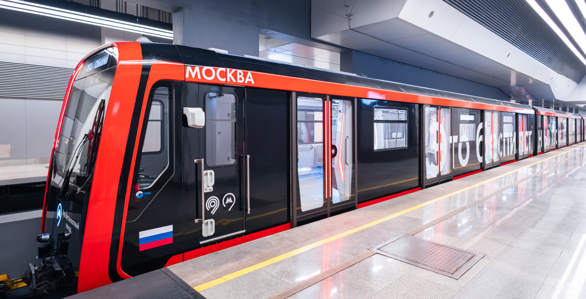
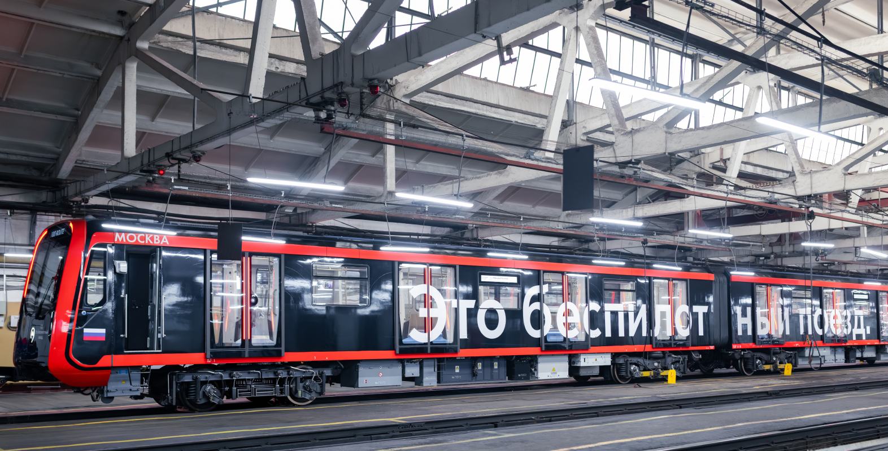

Типовая
вложенная страница
Мир поездов — это особенная вселенная, живущая по своим строгим и в то же время поэтичным законам. Для кого-то поезд — просто транспортное средство, способ добраться из точки А в точку Б. Но для миллионов людей во всем мире железная дорога остается чем-то гораздо большим: символом романтики дальних странствий, могучей силой индустрии и молчаливым свидетелем истории.
Взгляните на вокзал за час до отправления. Это место пропитано особым электричеством. Спешка командировочных, нетерпение детей, прильнувших к стеклам, и задумчивость пожилых пассажиров, для которых стук колес — привычный аккомпанемент жизни. Перрон гудит многоголосицей, пахнет углем, кофе и дорожной пылью. И вот, наконец, издалека доносится низкий, бархатистый гудок тепловоза или пронзительный свист электропоезда. В воздухе начинает вибрировать железная поступь приближающегося состава. Это завораживающее зрелище — когда из-за поворота, словно сказочный змей, вырастает локомотив, таща за собой вереницу вагонов.

Современные поезда поражают воображение. Скоростные «Сапсаны» и «Ласточки» разрезают пространство со скоростью 200-250 км/ч, сокращая расстояние между городами до минимума. Их аэродинамичные формы, тихий, но мощный ход — это квинтэссенция инженерной мысли XXI века. В них практически не чувствуешь движения, лишь мелькающие за окном пейзажи напоминают о том, что ты несешься вперед. Это абсолютно другой опыт, далекий от неспешной созерцательности прошлого.
Но истинная душа железных дорог раскрывается в путешествии на обычном пассажирском поезде дальнего следования. Плавное покачивание вагона убаюкивает не хуже колыбельной. Стук колес превращается в ритмичный пульс самой дороги. Проводник в форменной одежде приносит чай в традиционном подстаканнике — и этот терпкий напиток кажется самым вкусным на свете. А какое удовольствие наблюдать за сменой картинки за окном! Мегаполисы сменяются лесами, леса — бескрайними полями, поля — суровыми скалами или лентами рек. Поезд дарит уникальную возможность прочувствовать масштабы своей страны, увидеть, как восход солнца красит в розовый цвет верхушки берез, и как закат утопает в степном мареве.
Отдельная страница летописи — это поезда прошлого. «Паровозы» — тяжеловесные гиганты на угле и паре. Они до сих пор работают на ретро-маршрутах, вызывая искренний восторг. Громада из металла, пышущая жаром топки, клубы густого белого пара и мощный, басовитый гудок переносят нас в эпоху Дикого Запада или первых пятилеток индустриализации. Эти машины — живые памятники труду и упорству человека.

Нельзя не вспомнить и о тех, кто обеспечивает бесперебойную работу стальных магистралей. Это целая армия людей в синей форме: машинисты, следящие за сотнями приборов в кабине локомотива; строгие диспетчеры, управляющие движением, словно дирижеры оркестром; путейцы, проверяющие каждый стык рельсов; составители поездов, которые в любую погоду формируют составы на сортировочных горках. Их труд — основа грандиозного механизма, не знающего сна и отдыха.
Поезд — это метафора жизни, где каждый вагон — отдельная судьба, а рельсы — предопределенный путь. Он дарит нам чувство дороги, в пути мы становимся немного философами, отрываясь от привычной суеты. Садитесь в поезд, смотрите в окно, слушайте его дыхание. И вы обязательно услышите в этом мерном ритме зов далеких странствий и тихую песнь бесконечного пути.